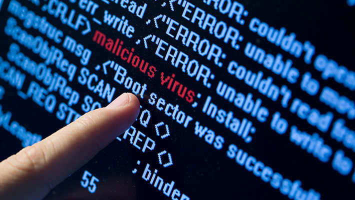

A 80-as évek közepén még nem sokan vették komolyan azokat a programozókat, akik azt állították, hogy léteznek olyan programok, melyek saját magukat sokszorosítják, a rendszerbe beépülve számítógépeket fertőznek meg, és más rendszereket tesznek tönkre. Napjainkban minden felhasználó hallott a vírusokról, de sajnos csak kevesen vannak tisztában a vírusok fajtáival, fertőzési módjukkal, és a védekezési módszerekkel.
A számítógépes vírusok természetesen programok, amelyek többnyire olyan kicsik, hogy a rendszerben megbújva képesek úgy működni, hogy ne vegyük észre.
A vírusokat két részre oszthatjuk
Lappangási időszak:
A vírus megpróbál észrevétlen maradni, csak szaporodik, azaz más rendszereket fertőz meg, minél nagyobb példányszámú egyedet próbál magából létrehozni. Az időszak lényege az életben maradás, tehát ha egy példány megsemmisül, még legyenek másolatok.
Aktiválódási időszak:
A vírusos rendszer bizonyos számú indítás után, vagy egy külső körülmény bekövetkezésekor, a vírus aktivizálódik. Ez azt jelenti, hogy ettől a pillanattól nem szaporodással, hanem károkozással foglalkozik.
A számítógépes vírus olyan program, amely saját másolatait helyezi el más, végrehajtható programokban vagy dokumentumokban. A vírus csupán egyike a rosszindulatú szoftverek számos típusának. Ez megtéveszthető lehet a számítógép felhasználók számára, mivel mára lecsökkent a szűkebb értelemben vett számítógépes vírusok gyakorisága, az egyéb rosszindulatú szoftverekhez, mint például a férgekhez képest.
Bár a számítógépes vírusok lehetnek kártékonyak, a vírusok bizonyos fajtái azonban csupán zavaróak. Némely vírus késleltetve fejti csak ki hatását, például csak egy bizonyos számú gazdaprogram megfertőzése után. A vírusok domináns kártékony hatása az ellenőrizetlen reprodukciójuk, mely túlterhelheti a számítógépes erőforrásokat.
Gyakori jellemzők
A gazdaprogramok megfertőzése és az önsokszorosító viselkedés valamennyi vírusra jellemző. Ezenkívül gyakran rendelkeznek a következő tulajdonságokkal:
nagyon kis méret;
legtöbbjük a Microsoft Windows operációs rendszereken okoz gondokat;
futtatható állományokat képesek megfertőzni;
futtatható állományokat képesek megfertőzni;
gyakran akár válogatva, időzítve tönkretesznek más fájlokat;
rejtetten működnek, esetleg akkor fedik fel magukat, ha feladatukat elvégezték;
egyre fejlettebb intelligenciával rendelkeznek, pl. változtathatják saját kódjukat és aktivitásukat
A vírusok céljai nem a rombolás, hanem illegális javak, illetve személyes, titkos adatok megszerzése. Ennek megfelelően terjesztési módszerük is különbözik a korábbiaktól. 2005-ben az “izraeli eset” kapcsán jegyezték fel az első személyre szabott trójai programot alkalmazó csendes támadást.
A vírusok fajtái
Másolás elleni vírusok:
Nem szaporodnak, egy adott rendszerbe vannak integrálva. Lappangási idejük nincs, céljuk a programlopás megakadályozása, felismerve a számítógépes környezet megváltozását. Barátságosabb fajtájuk csak az adott rendszer elindítását akadályozzák, de vannak, amelyek az újonnan telepített rendszer egészét , esetleg sok mást is törölnek. Napjaink gyakori alaplap és op rendszer cseréjével létjogosultságukat vesztették.
Károkozó vírusok:
Ezek a vírusok az aktivizálódási időszakban törlik, felülírják, vagy kódolják adatainkat, és többnyire a rendszer teljes összeomlását eredményezik, ami vírustól függően több indítás után vagy rögtön jelentkezik. Enyhébb vírusok esetén az adatok nem törlődnek, csak a vírus nehezíti a munkát.
Worm (féreg ) vírusok:
Céljuk nem a közvetlen károkozás, hanem hogy bizonyos információkat (jelszavak jogosultságok) nyerjenek ki a rendszerből, és ezeket letárolják vagy az interneten elküldjék.
A vírusok terjedése
Boot vírusok:

A lemez indító szektorába, és partíciós táblába telepednek meg és az indító programot cserélik le. A fertőzés terjedésének feltétele, hogy az indítólemez vírusos legyen. A vírusok terjedése a betöltési folyamatra alapozott: Egy fertőzött lemezzel való induláskor az operációs rendszer előtt a vírus is elindul, és a továbbiakban felügyeli a lemezműveleteket. Ezután minden lemez amelyre hivatkozunk fertőzött lesz.
Állomány (fájl vírusok):
Terjedésük során futtatható kódot tartalmazó (COM EXE SYS DRV BIN) állományokat fertőznek meg, és ezekbe írják bele saját kódjukat. A fertőzéshez elég elindítani egy fertőzött állományt és ezután minden állomány fertőződik, amelyre a rendszer hivatkozik
Fajtái
Apend vírusok(hozzáfűző):
Általában a végrehajtható állományok végéhez fűzik hozzá magukat, majd egy olyan kódot írnak az elejére, hogy a vírus hajtódjon végre először, és csak utána az eredeti művelet.
A hozzáfűző vírusok egyik speciális fajtája az amőba vírus, amely minden fertőzés után megváltoztatják kódjukat. Intelligens vírusok, a programkódot tömörítve tárolják és a kicsomagoló algoritmust vagy annak kódját változtatják.
Felülíró vírusok:
A fertőzött állomány egy részét felülírják és nem törődnek azzal, hogy a kód már nem hozható helyre.
Makró vírusok:
A vírus a DOC vagy XLS állományokba fészkeli be magát, és a dokumentum megnyitása után automatikusan el is indul. Nagy veszélye, hogy működésüket csak akkor vesszük észre, amikor már késő, másrészt, ha a szerző a vírust nem kódolja le, bárki azt módosíthatja, új vírust állítva elő, amelyet a variációk száma miatt a víruskeresők már nem tudnak követni.
Levélbombák:
A vírusok e-mailben terjednek, és akkor aktiválódnak, amikor elolvassuk a levelet. A fertőzés lefolyása függ a környezettől Ha van állandó internet kapcsolatunk, akkor a vírus az összes tárolt címre elküldi magát, majd egy E-mailt küld egy rendszernek. Ilyen levéláradat esetén egyes rendszerek össze is omolhatnak. Ha nincs állandó internet kapcsolatunk, akkor a vírus csak saját dokumentumainkat fertőzi meg.
Trójai faló vírusok
Programok különböző vírusokat vagy kémszoftvereket hordozhatnak magukban, amik elindításukkor automatikusan telepítésre kerülnek a gépre. Nevét a trójai falóról kapta, mert ahhoz hasonlóan kívülről másnak látszik, mint amit valójában rejt. A felhasználó által ismeretlen – általában káros és/vagy érdekeivel ellentétes – funkciókat is megvalósító szoftver, amely magát hasznos programnak álcázza, és így veszi rá a felhasználót elindítására.
Az egyszerűbb trójai programok csak kívülről tűnnek hasznos programnak, míg fejlettebb változataik a kémkedés mellett valóban képesek az ígért funkciók elvégzésére is – így csökkentve a lebukás veszélyét.
Az ilyen vírusok elsődleges célja adatok kinyerése. Működésük többféle lehet. Azonban az alapelve mindegyiknek ugyanaz. Egy biztonságosnak tűnő fájl vagy egyéb állomány letöltésekor, vagyis annak megnyitásakor lépnek működésbe. Ezért is nevezik őket Trójai faló vírusoknak, mivel saját magunk hozzuk be a rendszerünkbe. Működésük során többféle tünet is jelentkezhet. Egyes trójai vírusok a teljes rendszert megbénítják, és így nyerik ki az adatokat, majd eltárolják (ez még a jobbik eset, mivel az adat nem megy el a hálózaton), vagy pedig rögtön továbbküldik egy előre beprogramozott számítógépre. Azonban van mikor semmi jelét nem látjuk a vírus tevékenységének, csak akkor jövünk rá, ha már késő. A vírusokat általában ipari kémkedés céljából írják, de vannak magánfelhasználók ellen irányuló példányok is.
Védekezés a vírusok ellen
Megelőzés: Csak jogtiszta programot használjunk!
Korai felismerés: Figyeljük a gyanús jeleket a számítógép mûködése során!